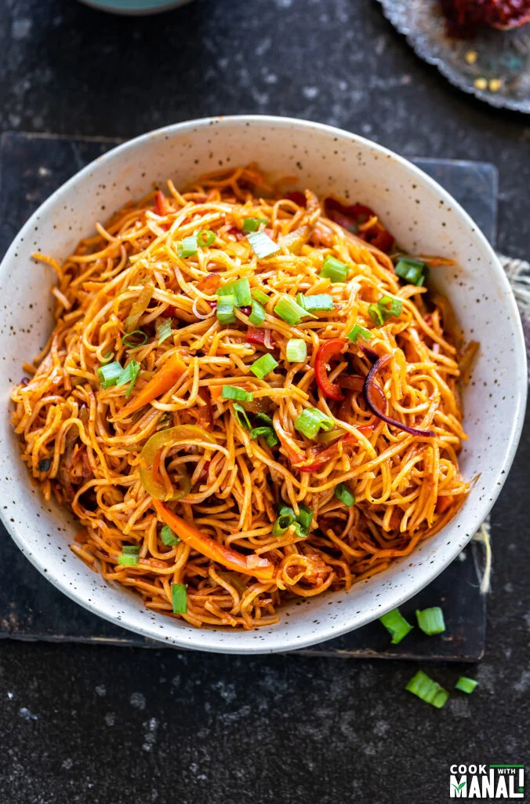

Schezwan Noodles

A spicy and scrumptious Chinese recipe
It features stir fried vegetables and noodles tossed with a homemade Schezwan sauce that's got a kick of heat and just the right hint of sweetness.
Ingredients
- 150 grams noodles hakka, instant or chow mein noodles
- 1 to 2 pinches salt or as required
- 4 cups water to cook noodles
- 2 to 3 drops oil to be added while heating water
- 1 to 2 teaspoons oil to coat the noodles
Other Ingredients
- 2 tablespoons oil for stir frying
- 1/4 cup chopped spring onion whites (scallion whites) reserve the greens for garnish
- 1/2 teaspoon finely chopped garlic or 2 to 3 small to medium garlic cloves
- 1/4 cup finely chopped french beans
- 1/4 cup finely chopped bell pepper
- 1/4 cup finely chopped carrots
- 1/2 cup finely chopped cabbage
- 1 cup sliced button mushrooms
- 1 tablespoon Schezwan Sauce or as required
- 1/4 to 1/2 teaspoon black pepper powder or as required
- Salt as required
- 1 teaspoon rice vinegar or apple cider vinegar or white vinegar
- 1 to 1.5 tablespoons spring onion greens (scallion greens)
Steps to cook
- Cook the noodles till they are al dente.
- Heat oil in a pan or wok.
- In a high flame, add and stir the vegetables till they're cooked.
- Now reduce the flame to medium heat and add schezwan sauce, salt and black pepper.
- Add the cooked noodles in batches. Toss, mix and stir fry.
- Increase the heat and keep on tossing and stir frying the noodles for a couple of minutes until the schezwan sauce coats the noodles evenly.
- Add rice vinegar or apple cider vinegar and mix well. Check the seasonings and add more schezwan sauce, black pepper and salt if needed.
- Add the chopped spring onions to schezwan noodles. Mix.
- Serve schezwan noodles.